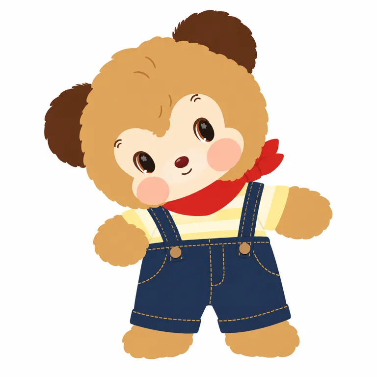
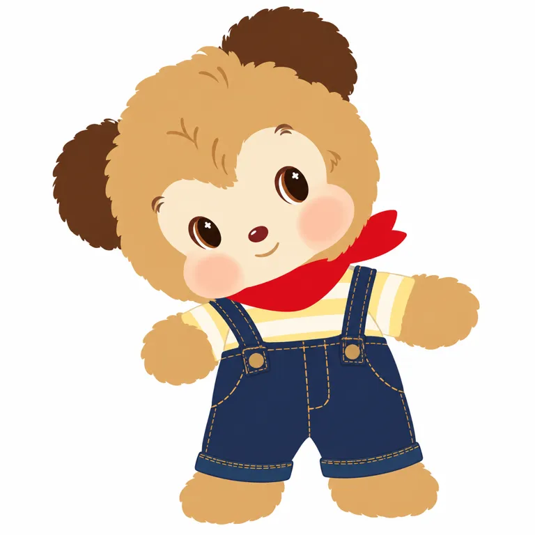

STANDARD v0.3 / 2026.10.31
RiboDiary
把森林的日常，
变成可以相处的伙伴。
这是一份角色群研究。瑞宝Bearibo是其中一位，不能把它与整个群像当成两个新IP重复排期。
看英文附图实测 ↗7张已查看官方原图 · 8行分地区SKU · 2轮真实平面测试

本轮根据官方新品发售＋独立用户讨论交叉选题，证据中等，不作全网热度排名。研究卡保留partial以标明起源与权属等缺口；英文附图V2只在指定可见身份范围ready，严格纯平涂仍未通过。
01 / 新系列，不等于角色刚诞生
官方发售与运营由POP MART承担；完整版权、合同期限和自然人作者仍未知。作者名只出现在二级线索，不能由此推定买断或自有创作。检索中一篇“作者介绍”明确是AI汇编，本报告不采纳其姓名结论。[R02] [R15] [R16]
6月已有Bearibo用户讨论，8月20日雪糕帖也提示更早的载体存在，但后者正文未显年份。10月29—30日是“森林欢聚日”的发售节点，不能写成全IP首创或首商业化。初始草稿、首次公开和首售均保留null。[R10] [R18] [R01]
当前官方集合把它描述为森林朋友共同发现勇气、梦想与友谊。日记本、清晨、相聚是当期叙事组织，不等于已找到正式出版绘本；未核ISBN，也未读完整书。[R08] [R01]
02 / 故事怎样变成一次相处
把“清晨醒来参加聚会”做成可动玩偶与被窝摆放玩法
官方公告明确可动及刺绣被子，所看手办场景用床/读书/手作延展日常 [R01] [R02]
研究推断／边界：功能与故事对应有证据；未证明因此带来转化、复购或安抚效果，陈列摄影也可能贡献吸引力
群像以共同脸部语言维持家族感，同时让用户选择某一成员
官方角色列表和所看熊/企鹅/兔图像支持共享语言；独立评论有只关注Joeius、抽重Iceymel求交换 [R02] [R09]
研究推断／边界：仅一条公开线程的少量账号；交换意向不等于成交，共同脸部也有眼熟/辨识度风险
“友情、勇气”是设定；消费者为什么购买仍要另找行为证据。复古外观、成熟渠道与摄影布景都是替代解释，不把一切归给情绪价值。
03 / 家族语言与成员差异
共同语言包括大头短身、淡色脸区、腮颊与眼中四叶状图案；熊的圆耳、兔的长耳、企鹅的喙与脚则是成员差异。以下是已实际查看的官方图片，摄影与材料分开，不补不可见背面。

圆头棕熊，淡色双叶脸区、凸起腮颊、红鼻小笑；戴条纹睡帽，坐床抱糖罐。
睡帽与糖罐属于本款；床、窗帘和暖光属于摄影环境。 [R02]

黑白企鹅，蓝色眼部、黄色喙脚，手持两团毛线，脚立于地毯。
不能把黑白色与喙推广为整个角色群；看图不等于验证关节强度。 [R02]

粉色兔长耳，淡脸、红鼻与腮颊，黄色裙子，坐椅读书。
读书姿势与家具为本场景；书封出现RiboDiary不证明有正式出版书目。 [R02]
蓬松金棕头身，圆耳较深、额毛下探；浅色脸区、椭圆眼内四叶状亮点、突出腮颊；条纹T恤、红巾、蓝背带短裤，微侧倾站姿张臂。
挂环未出现在本照片范围，不能补画其位置；本轮平面目标锁定此图可见身体。 [R03]

正面站姿，棕耳与浅脸保留；芥末黄帽和背带裤、红巾、白毛衣彩球与旋纹糖果。
这张是35cm玩偶包，不拿它充当手办隐藏款的结构；内部骨架仅有媒体转述，未实测。 [R04]

短绒棕熊，浅脸棕耳；红系带、彩点围兜、棒棒糖，单脚前伸。
与玩偶包同糖果主题但服装和结构不同；不把同名隐藏跨品类合并。 [R02]

毛绒背包外轮廓以包体为主，正面熊脸和透明窗；照片摆放多个伙伴于展示窗，旁有独立瑞宝。
图片文字明确玩偶不包含；陈列示意不是承重、最大容量或赠品承诺。 [R06]
不变量与变量的边界
只对看过的跨款熊图，可观察到棕耳、浅脸和腮颊仍承担识别；帽、红巾、蓝裤、围兜与糖果不是全群强制不变量。眼内图案是家族线索，但本轮未做缩小、灰度、去衣装或用户识别实验。包体适配会改变头身比，不能要求它和小手办完全一致。
04 / 原图坐标取色，不是生产规范
均取V04原始1200×1200 JPEG，以左上为原点，Pillow转RGB、单点采样。毛面与织物阴影明显，尤其深蓝裤的取样点偏暗；这里只保留可复核记录，不把暗部数值直接当均匀涂装色。未分割面积，不输出比例。
| 部位 | 屏幕近似 | 坐标 | 适用边界 |
|---|---|---|---|
| 棕色毛面 | #AF8056 | [600, 290] | Bearibo当前常规挂件 |
| 浅奶油粉脸区 | #F7DACA | [540, 490] | Bearibo当前常规挂件 |
| 暗红领巾 | #A00910 | [650, 550] | 当款衣装 |
| 深靛蓝背带裤 | #110F1A | [600, 800] | 当款衣装 |
V01睡帽款、V05糖果主题与V02/V03其他物种分别对照，不能将芥黄服装、蓝色布景或暖光推广成整个IP签名色。未取得官方色卡及实物打样。
05 / 产品：同主题，不同规格
美国价格为2026-10-31官网集合页显示USD价，税费未另核；中国为对应官方公告人民币价。时区按原页保留，不擅将PST改成PDT，也不跨国直接比较利润。以下每行均有对应来源。
| SKU / 地区 | 日期与价格 | 尺寸 / 材料 | 配置与边界 |
|---|---|---|---|
| P01 Forest Gathering Day植绒手办盲盒 中国 | 2026-10-29 22:00线上；10-30线下（北京时间） 69 CNY | None 长短绒结合植绒；头部可左右各约90°，手脚可动；配姓名刺绣被子（官方自述） | 6常规＋1隐藏；公告常规1:6，隐藏1:72；整套414元，不能推为含全部隐藏款 [R01] |
| P02 Forest Gathering Day手办 美国 | 2026-10-29 17:00 PST（原页写法，不擅改时区） 19.99 USD | 高8–10cm PVC / Nylon / Polyester / PU；未取得各部位BOM | 系列含六个常规角色及糖果瑞宝，见官方图列；不等于每盒七体 [R02] [R08] |
| P03 Forest Gathering Day毛绒公仔挂件盲盒 中国 | 2026-10-29 22:00线上；10-30线下 129 CNY | None 品类为毛绒公仔挂件；不把手办规格套入 | 6常规＋1隐藏；公告常规1:6，隐藏1:72；整套774元 [R14] |
| P04 Forest Gathering Day毛绒挂件 美国 | 2026-10-29 17:00 PST（原页） 29.99 USD | 足至头顶约13.5–14.5cm；不含配件/耳/挂绳/挂环 Polyester / PVC / ABS / POM / Polyamide；填充聚酯纤维/塑料颗粒 | 不同成员面部与衣装分别核；不推手办材料或脚长 [R03] [R08] |
| P05 玩偶包 — Bearibo 美国 | 2026-10-29 17:00 PST（原页） 99.99 USD | 足至头顶约35cm，不含帽 Polyester / Zinc Alloy / PVC / ABS；填充聚酯纤维 | 金棕背带裤糖果主题；单体包，不当作隐藏盲盒款 [R04] [R08] |
| P06 毛绒迷你包系列 美国 | 2026-10-29 17:00 PST（原页） 27.99 USD | 约15–19.5cm Polyester / Zinc Alloy；填充聚酯纤维 | 不可将包体尺寸套毛绒挂件 [R05] [R08] |
| P07 背包 — Bearibo 美国 | 2026-10-29 17:00 PST（原页） 59.99 USD | 约30cm高 Polyester / Zinc Alloy / PVC / Nylon；填充聚酯纤维/PU/EVA | 官方图有透明展示窗，图中玩偶不包含；照片不证明最大容量 [R06] [R08] |
| P08 擦手巾系列 美国 | 2026-10-29 17:00 PST（原页） 15.99 USD | 约26–30cm高，不含织带 100% Polyester；部分附件ABS；填充100%聚酯纤维 | 日用品载体；未触摸、不作吸水性或耐洗评价 [R07] [R08] |
单IP净销量、营收、毛利、复购和退货均未知。第三方缺货与官方英国页面的选项未加载并不一致，故不认定售罄速度，更不把集团收入移作本IP成绩。[R11] [R12]
06 / 用户行为与不舒服的反证
近期样本来自一个公开线程，按行为差异选取六位账号；另读取一个6月旧线程作存在时间线索。没有随机抽样，也没有小红书实读。下面都保留“谁说了什么”的证据等级，不由点赞推销量。
| 账号 / 可见时间 | 观察 | 能证明什么 |
|---|---|---|
| Bunnyxboy 10d ago（观察2026-10-31） | 表达复古联想和想入手 | 意向，不是成交 |
| PrettyKnowledge1 7d ago | 只关注Joeius | 成员偏好，不能推全群人群结构 |
| Miserable_Ad_1749 3h ago | 自述抽到重复Iceymel，问交换渠道 | 持有/抽重自述与交换意向；无订单或交换完成证明 |
| Popular-Efficiency28 6d ago | 认为与另一品牌眼熟 | 相似性意见，不是权属或抄袭结论 |
| Background-Fox954 5d ago | 转述作者旧合作，后承认来源是Instagram评论 | 二次听闻；不作作者确认 |
| SilentSerel 9d ago | 表示喜欢与预算玩笑 | 口头反应，不是付费 |
一个人抽重后问交换渠道，支持“角色偏好和补齐需求可以不同于整群购买”；但无订单、无交换完成证明。眼熟意见说明独特识别仍值得检验，不能拿未经核实的“同作者”传闻一笔带过。
未找到已核失败SKU或完整退坑调查，不能写从未失败。可能边界包括同类复古风竞争、服装装饰压过裸形记忆、抽重负担，以及多载体上新带来的预算分流；这些目前都是待检验解释。
07 / 这次为什么选它
官方10月29—30日发售可以核对，独立线程里出现关注、成员偏好及抽重求交换，构成另一类线索。线程首帖10月21日纳入扩展30天窗口；不把它伪称7天内新发帖。第三方库存追踪仅弱辅助，不能用其估价与售罄速度计算增长。
五类热点扫描、去重及候选边界
{
"date": "2026-10-31",
"status": "selected_one",
"window": [
"2026-10-24",
"2026-10-31"
],
"expanded_window": [
"2026-10-01",
"2026-10-31"
],
"read_head": "8cef2d6f5c3470668ed7c3f17a563ec522be96d5",
"existing_study_count": 42,
"all_aliases_checked": true,
"pochacco_exists": true,
"latest_checkpoint": "Loveez 10-30附图ready；本轮不把纯文字未测当该对象全部失败。历史旧卡的未通过记录保留，不改写。",
"selected": "ribodiary",
"qualified_candidates": [
"ribodiary"
],
"selection_reason": "当前官方发售/商品与独立用户线程（含抽重寻交换自述）交叉；近期兴趣可核，未测全网升温率。第三方缺货仅作弱辅助。",
"candidates": [
{
"id": "ribodiary",
"category": "泡泡玛特",
"event_date": [
"2026-10-29",
"2026-10-30"
],
"published": [
"2026-10-23",
"2026-10-27"
],
"classes": [
"官方新品发售",
"独立收藏讨论/抽重交换意向"
],
"strength": "中等",
"decision": "选中",
"sources": [
"R01",
"R14",
"R09",
"R11"
],
"boundary": "扩大30天窗口纳入10月21日线程；无排名、销量或售罄速度"
},
{
"id": "polar",
"category": "泡泡玛特",
"event_date": "2026-10-30至2027-03-07展期",
"published": "2026-10-26",
"classes": [
"展览公告"
],
"strength": "官方供给强，需求弱",
"decision": "暂未选",
"sources": [
"H01"
],
"boundary": "展期公告不证明实际到访/售票；与新品预热不混成销量"
},
{
"id": "miniso-chouchou",
"category": "名创优品",
"event_date": "2026-10-25至11-21",
"published": "2026-10-22",
"classes": [
"联名快闪"
],
"strength": "活动可核，需求不足",
"decision": "暂未选",
"sources": [
"H02",
"H03",
"H06"
],
"boundary": "不合并周同学CHOUCHOU旗舰店和其SKU/商业数据，不认同名即同IP"
},
{
"id": "k-monsters",
"category": "韩国",
"event_date": "2026-10-22至11-03；作者称10-27到访",
"published": "2026-10-28",
"classes": [
"快闪/单人到访"
],
"strength": "中弱",
"decision": "暂未选",
"sources": [
"H04"
],
"boundary": "到访不是销售；没有可比热度/需求变化"
},
{
"id": "puppet-sunsun",
"category": "其他日本",
"event_date": "库存快照10-17；常设店预告11月",
"published": null,
"classes": [
"二级库存/开店线索"
],
"strength": "弱",
"decision": "未列合格候选",
"sources": [
"H07"
],
"boundary": "未由官方回溯，不能将下架品数推净销量"
}
],
"coverage": {
"pop_mart": "RiboDiary选中；其他旧角色去重",
"miniso": "CHOUCHOU核对同名，YOYO已入库；不并入TOP TOY成绩",
"sanrio": "本周上新可核；群像供给不证明未研究成员升温",
"other_japan": "Puppet Sunsun保留线索；Loveez/Sonny Angel已入库不重复",
"korea": "K-MONSTERS活动与到访文，未足够升温证据"
},
"sources": [
{
"id": "H01",
"title": "POLAR展讯",
"url": "https://www.sina.cn/news/detail/5358285288899738.html",
"publisher": "POPMART泡泡玛特",
"published": "2026-10-26",
"observed": "2026-10-31",
"access": "full",
"note": null
},
{
"id": "H02",
"title": "名创CHOUCHOU秋日快闪",
"url": "https://www.sina.cn/news/detail/5356880315548319.html",
"publisher": "名创优品",
"published": "2026-10-22",
"observed": "2026-10-31",
"access": "partial",
"note": null
},
{
"id": "H03",
"title": "周同学同名品牌线索",
"url": "https://www.hstong.com/news/detail/26092312170252698",
"publisher": "华盛通转载",
"published": "2026-09-23",
"observed": "2026-10-31",
"access": "snippet_only",
"note": "本轮打开超时；只用于排除混同，不用于确认名创成绩"
},
{
"id": "H04",
"title": "韩国K-MONSTERS到访文",
"url": "https://m.view.nate.com/travel/view/420300/",
"publisher": "다빛",
"published": "2026-10-28",
"observed": "2026-10-31",
"access": "partial",
"note": null
},
{
"id": "H05",
"title": "三丽鸥周新品",
"url": "https://www.sanrio.co.jp/news/goods/goods-release-202610-week5/",
"publisher": "Sanrio",
"published": "2026-10-23",
"observed": "2026-10-31",
"access": "partial",
"note": null
},
{
"id": "H06",
"title": "名创官方新闻页",
"url": "https://miniso.cn/brand/news.html",
"publisher": "MINISO",
"published": null,
"observed": "2026-10-31",
"access": "partial",
"note": null
},
{
"id": "H07",
"title": "日本Puppet Sunsun库存线索",
"url": "https://kokoniatta.com/puppet-sunsun-goods/",
"publisher": "ココニアッタ",
"published": null,
"observed": "2026-10-31",
"access": "snippet_only",
"note": "10月17日快照/11月常设店为二级线索，未核官方，不计当前销量"
}
],
"not_a_ranking": true
}渠道与季节可能同样重要：秋冬衣装、节日陈列和多个价格入口扩大接触，但仍无实验或同口径时间序列能拆出各自贡献。
08 / 真正生成之后，再谈提示词
以下是依据可见产品摄影的研究性二维转绘，不是作者原始提示词，也不是官方平面设定。目标锁定V04蓝背带裤挂件的可见身体、微侧倾和颜色；画面文字、草地与摄影材质在输入前即排除。原图完整1200×1200，无裁切。

ready仅指这一附图模式的可见身份近似。严格无渐层纯平涂未通过；纯文字、中文、重复稳定性、3D与毛绒生成均未测。不用附图成功证明纯文字成功，不继续实物生成。
下载已测英文附图词Create a flat 2D research illustration of the single small golden-brown bear shown in the attached reference photo, preserving this exact outfit, visible angle and leaning pose. Use the reference as the identity and pose source, not as a style source. Preserve a very large round head with two dark-brown round ears, the tousled central forehead tuft dipping into a pale cream heart-shaped face mask, protruding rounded peach-rose cheek areas, a tiny dark red oval nose and shallow closed smile. Preserve the two widely separated glossy dark oval eyes with warm brown side arcs, small pale clover-like highlights and the asymmetry caused by the head tilting toward the viewer's left. Small rounded body, short arms spread to the sides as in the photo, short legs, cream-and-pale-yellow striped shirt, red neckerchief pointing to the viewer's right, dark indigo bib shorts with shoulder straps, two tan buttons, ochre seam lines and turned-up hems. Brown exposed paws and feet. Translate fur into a simple slightly irregular outer contour and flat color areas; retain only a few short forehead tuft lines, not realistic hair. Center the full visible body on a plain white background with clear margins. Remove the grass, landscape, loose candy, shadows, copyright marks and legible embroidered lettering; keep the scarf red and otherwise keep the visible clothing shapes and color placement. No new accessories, no hanging ring invented outside the photographed area, no new pose, no extra characters, no 3D render, no gradients, no fabric texture. Do not invent hidden back details. Refinement requirements: keep the head tilt subtle, as in the original photograph, rather than exaggerating it. Match the small cream face-mask area and broad golden-brown forehead in the photo: the downward center forehead tuft ends above the nose bridge and covers more upper forehead, and the cheek lobes project sideways from the lower mask. Keep the eyes at their original small size and orientation, the smile short and almost horizontal, and the arms' original unequal bend. Use strictly uniform flat fills for the golden-brown fur, cream mask, red scarf and dark-indigo shorts. Do not add radial shading or shadow gradients. Show gentle peach cheek patches with a single flat peach tone. Preserve the original large-head-to-short-body relation without enlarging the head further.
全部测试记录：V1问题、V2修订、真实输入与依赖

[
{
"prompt_id": "ribodiary-bearibo-flat-ref-v1",
"version": 1,
"subject_id": "ribodiary",
"target_scope": "V04森林欢聚日蓝背带裤瑞宝挂件，可见微侧倾全身的二维身份转绘；排除摄影场景及文字，不证明有官方2D母版",
"carrier": "平面研究转绘",
"exact_prompt": "Create a flat 2D research illustration of the single small golden-brown bear shown in the attached reference photo, preserving this exact outfit, visible angle and leaning pose. Use the reference as the identity and pose source, not as a style source. Preserve a very large round head with two dark-brown round ears, the tousled central forehead tuft dipping into a pale cream heart-shaped face mask, protruding rounded peach-rose cheek areas, a tiny dark red oval nose and shallow closed smile. Preserve the two widely separated glossy dark oval eyes with warm brown side arcs, small pale clover-like highlights and the asymmetry caused by the head tilting toward the viewer's left. Small rounded body, short arms spread to the sides as in the photo, short legs, cream-and-pale-yellow striped shirt, red neckerchief pointing to the viewer's right, dark indigo bib shorts with shoulder straps, two tan buttons, ochre seam lines and turned-up hems. Brown exposed paws and feet. Translate fur into a simple slightly irregular outer contour and flat color areas; retain only a few short forehead tuft lines, not realistic hair. Center the full visible body on a plain white background with clear margins. Remove the grass, landscape, loose candy, shadows, copyright marks and legible embroidered lettering; keep the scarf red and otherwise keep the visible clothing shapes and color placement. No new accessories, no hanging ring invented outside the photographed area, no new pose, no extra characters, no 3D render, no gradients, no fabric texture. Do not invent hidden back details.",
"language": "en",
"input_mode": "reference_image",
"reference_image_ids": [
"V04"
],
"reference_preparation": "1200×1200完整官方原图，无裁切；只作本地研究依赖，公开不打包",
"generated_file": "flat-ref-v1.webp",
"tested_at": "2026-10-31",
"status": "revise",
"checks": {
"identity": "棕熊＋淡色双叶脸区＋棕耳＋四叶状眼点接近",
"silhouette": "大圆头短身和侧倾张臂可辨；额毛与局部弧度仍不同",
"face": "v1脸区偏宽、倾斜偏强；v2额毛/短笑改善，眼与腮颊轮廓仍略异",
"colors": "红巾、深蓝裤、浅黄条纹与棕毛区域对应；照片光照不复制为标准色",
"pose": "保留可见四肢和微侧倾；挂环及背面未补",
"render": "二维插画，仍有微渐层/白底纸纹；严格均匀纯平涂未通过"
},
"revision_reason": "初次结果脸区偏宽、倾斜偏强、渐层明显，保留旧图并修词重测",
"remaining_differences": [
"眼部四叶亮点形状与大小、腮颊和毛缘仍略异",
"只一次最终附图结果；不证明纯文字/中文/重复稳定性",
"白底微纸纹与轻微渐层仍在；不可声称精确复刻或严格纯平涂"
],
"untested_modes": [
"纯文字中文",
"纯文字英文",
"中文附图",
"重复稳定性",
"3D",
"毛绒概念生成"
]
},
{
"prompt_id": "ribodiary-bearibo-flat-ref-v2",
"version": 2,
"subject_id": "ribodiary",
"target_scope": "V04森林欢聚日蓝背带裤瑞宝挂件，可见微侧倾全身的二维身份转绘；排除摄影场景及文字，不证明有官方2D母版",
"carrier": "平面研究转绘",
"exact_prompt": "Create a flat 2D research illustration of the single small golden-brown bear shown in the attached reference photo, preserving this exact outfit, visible angle and leaning pose. Use the reference as the identity and pose source, not as a style source. Preserve a very large round head with two dark-brown round ears, the tousled central forehead tuft dipping into a pale cream heart-shaped face mask, protruding rounded peach-rose cheek areas, a tiny dark red oval nose and shallow closed smile. Preserve the two widely separated glossy dark oval eyes with warm brown side arcs, small pale clover-like highlights and the asymmetry caused by the head tilting toward the viewer's left. Small rounded body, short arms spread to the sides as in the photo, short legs, cream-and-pale-yellow striped shirt, red neckerchief pointing to the viewer's right, dark indigo bib shorts with shoulder straps, two tan buttons, ochre seam lines and turned-up hems. Brown exposed paws and feet. Translate fur into a simple slightly irregular outer contour and flat color areas; retain only a few short forehead tuft lines, not realistic hair. Center the full visible body on a plain white background with clear margins. Remove the grass, landscape, loose candy, shadows, copyright marks and legible embroidered lettering; keep the scarf red and otherwise keep the visible clothing shapes and color placement. No new accessories, no hanging ring invented outside the photographed area, no new pose, no extra characters, no 3D render, no gradients, no fabric texture. Do not invent hidden back details.\nRefinement requirements: keep the head tilt subtle, as in the original photograph, rather than exaggerating it. Match the small cream face-mask area and broad golden-brown forehead in the photo: the downward center forehead tuft ends above the nose bridge and covers more upper forehead, and the cheek lobes project sideways from the lower mask. Keep the eyes at their original small size and orientation, the smile short and almost horizontal, and the arms' original unequal bend. Use strictly uniform flat fills for the golden-brown fur, cream mask, red scarf and dark-indigo shorts. Do not add radial shading or shadow gradients. Show gentle peach cheek patches with a single flat peach tone. Preserve the original large-head-to-short-body relation without enlarging the head further.",
"language": "en",
"input_mode": "reference_image",
"reference_image_ids": [
"V04"
],
"reference_preparation": "1200×1200完整官方原图，无裁切；只作本地研究依赖，公开不打包",
"generated_file": "flat-ref-v2.webp",
"tested_at": "2026-10-31",
"status": "ready",
"checks": {
"identity": "棕熊＋淡色双叶脸区＋棕耳＋四叶状眼点接近",
"silhouette": "大圆头短身和侧倾张臂可辨；额毛与局部弧度仍不同",
"face": "v1脸区偏宽、倾斜偏强；v2额毛/短笑改善，眼与腮颊轮廓仍略异",
"colors": "红巾、深蓝裤、浅黄条纹与棕毛区域对应；照片光照不复制为标准色",
"pose": "保留可见四肢和微侧倾；挂环及背面未补",
"render": "二维插画，仍有微渐层/白底纸纹；严格均匀纯平涂未通过"
},
"revision_reason": "在原图依赖上重测；改善脸区、额毛与短笑，身份项接近，严格无渐层保留缺口",
"remaining_differences": [
"眼部四叶亮点形状与大小、腮颊和毛缘仍略异",
"只一次最终附图结果；不证明纯文字/中文/重复稳定性",
"白底微纸纹与轻微渐层仍在；不可声称精确复刻或严格纯平涂"
],
"untested_modes": [
"纯文字中文",
"纯文字英文",
"中文附图",
"重复稳定性",
"3D",
"毛绒概念生成"
]
}
]09 / 给后续工作的候选启发
lab：可研究把小勇气落在具体日常而非泛泛治愈；先验证目标人群是否有相应需要，不能从设定反推动机。
form：可借家族共享语言＋物种差异机制；需检验剪影/头像/去衣装后识别，不能搬专属脸与眼点组合。
studio：内容动作可映射到被窝、服装、可动与随身载体；各SKU独立核材料和尺寸，陈列热闹不代表购买或复购。
不自动进入原创开发，不输出照搬识别组合的原创方案，不替用户做审美或投产判断。
当前缺口
- 自然人作者、最初草稿、首条公开原作、完整著作权/商标/授权合同未核；ribo及中文姓名仅保留线索，不从AI汇编确认。
- 6月用户已讨论Bearibo，8月雪糕帖正文有日期但未显年份；10月森林欢聚日不能当全IP诞生/首售。
- 小红书连接返回Unknown tool；RiboDiary 品牌介绍与RiboDiary 产品汇总两组未执行，实读0篇。
- 独立用户样本来自1条近期线程的6位账号和1条早期讨论；未随机抽样，无中国用户年龄/性别比例、全平台排名或复购率。
- 第三方显示英国/美国缺货；英国官方读取为选项未加载，不能直接证实售罄或售罄速度；首批库存与销量均null。
- 已看7张官方原图，未覆盖所有成员全部视角和早期人偶影像；未读实体绘本，未核出版物ISBN，不把绘本感等同绘本起源。
- 平面只英文附图V2的特定款式可见身份接近；额毛/眼/腮颊有轻微差别，仍有微渐层/纸纹；纯文字、中文、重复稳定性未测。
- 原图不公开打包；内部结构、绒感、承重、耐用性、清洗与关节寿命未实测，成本利润未知。
10 / 来源与可复核档案
来源等级按实读范围标记；AI汇编和用户转述只用于找线索。官方图片保留原始链接，不打包再分发。所有观察日为2026-10-31。
- R01 森林欢聚日手办官方发布
POPMART泡泡玛特认证账号 · 发布 2026-10-27 · partial
读取主帖，不把下面的其他转发文章算该IP证据 - R02 美国官网手办详情
POP MART · 发布 None · full - R03 美国官网毛绒挂件详情
POP MART · 发布 None · full - R04 美国官网玩偶包瑞宝详情
POP MART · 发布 None · full - R05 美国官网迷你包详情
POP MART · 发布 None · full - R06 美国官网背包瑞宝详情
POP MART · 发布 None · full - R07 美国官网擦手巾详情
POP MART · 发布 None · full - R08 美国官网角色商品集合
POP MART · 发布 None · full
价格采用本集合观察页价，非海外统一价 - R09 近期独立用户讨论：Is this a new IP
Reddit / KitchenLoan6 · 发布 2026-10-21 · partial
搜索给绝对日期，打开页10d ago；选取主线程六位账号评论，不包括相关推荐，不展开隐藏回复 - R10 早期用户讨论：NEW IP Bearibo
Reddit / Technical-Search-359 · 发布 2026-06-10 · partial
页面4mo ago；作者和旧合作的说法是用户线索，不直接填权属 - R11 第三方零售状态追踪
Shelfd · 发布 None · partial
有联盟链接；Out of stock与估算全套价不是净销量，不采用隐藏款2.5倍估价 - R12 英国官网对应商品页
POP MART · 发布 None · partial
仅见Please select an option，未读出明确可购/缺货；第三方缺货未获直接确认 - R13 群像人设及载体发布稿
freestyle潮流网 · 发布 2026-10-27 · full
公关稿性质，设定/功能为品牌自述的媒体转述；非独立用户实测 - R14 毛绒挂件中国售价与发售公告
POPMART泡泡玛特认证账号 · 发布 2026-10-23 · partial
主帖与可见相关帖子分开，不转录其他IP和投资内容 - R15 设计师姓名线索的AI汇编
什么值得买AIGC汇编 · 发布 2026-06-29 · partial
页面明确内容由AI生成；不采用作者姓名、全网无差评、其他IP销售数字等作为事实 - R16 日文作家博客候选
ribo · 发布 None · blocked
检索摘要有羊毛毡创作与旧书名；打开重定向循环。无法凭此把该作家确认成RiboDiary作者 - R17 日文官方毛绒挂件规格
POP MART Japan · 发布 None · snippet_only
搜索可见规格，打开不可访问；原产国等不移用至美国SKU - R18 已有雪糕发布线索
POPMART泡泡玛特认证账号 · 发布 None · partial
正文显示8月20日及9月25日，年份未显；不单凭此锁定全IP首售日 - R19 韩国媒体近期发布
韩国纤维新闻 · 发布 2026-10-30 · snippet_only
摘要可读，正文403；作为发布传播线索，不计第二类独立需求证据
card.json · sources.json · visual-index.json · products.json · color-system.json · user-samples.json · search-log.json · prompt-tests.json · selection-and-progress.json · research-notes.json
研究截止2026-10-31。研究结果不代表用户审美认可。